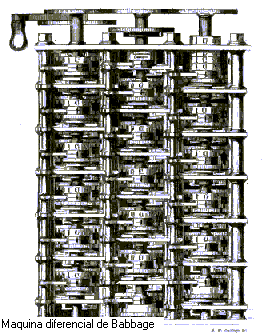
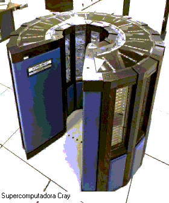
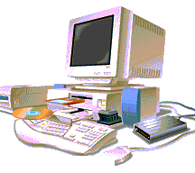
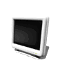
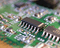

LOS COMPUTADORES
ANTECEDENTES
|
Quizás el ábaco fue el primer dispositivo mecánico de
contabilidad que existió. Se ha calculado que tuvo su origen hace al menos
5000 años y su efectividad ha soportado la prueba del tiempo. El inventor
y pintor Leonardo Da Vinci (1452-1519) trazó las ideas para una sumadora
mecánica que no llego a desarrollar físicamente. En 1617 John Napier
construyó los "Huesos de Napier" , una máquina de contar usada para
resolver problemas de multiplicación usando funciones logarítmicas. En
1641, el matemático y filósofo francés Blaise Pascal (1623-1662),
construyó una máquina mecánica para realizar adiciones, la Pascalina.
Gottfried Wilhelm Leibniz (1646-1716) propuso el sistema binario para
realizar los cálculos, construyendo una máquina que podía multiplicar, en
incluso teóricamente, realizar las cuatro operaciones aritméticas. Sin
embargo, la tecnología disponible le imposibilita la realización de las
operaciones con exactitud. Charles Babbage (1791-18171)diseñó una máquina
procesadora de información, capaz de autocontrolar su funcionamiento,
empezó a trabajar en la Máquina Analítica. El objetivo perseguido era
obtener una máquina calculadora de propósito general, controlada por una
secuencia de instrucciones, con una unidad de proceso, una memoria
central, facilidades de entrada y salida de datos, y posibilidades de
control paso a paso. En el 1854, George Boole publica Las leyes del
pensamiento sobre las cuales son basadas las teorías matemáticas de Lógica
y Probabilidad. Boole aproximó la lógica en una nueva dirección
reduciéndola a una álgebra simple, incorporando lógica en las matemáticas.
|
|
Siglo XIX
El inventor francés Joseph Marie Jacquard, al diseñar un
telar automático, utilizó delgadas placas de madera perforadas para controlar el
tejido utilizado en los diseños complejos. Durante la década de 1880 el
estadístico estadounidense Herman Hollerith concibió la idea de utilizar
tarjetas perforadas, similares a las placas de Jacquard, para procesar datos.
Hollerith consiguió compilar la información estadística destinada al censo de
población de 1890 de Estados Unidos mediante la utilización de un sistema que
hacía pasar tarjetas perforadas sobre contactos eléctricos.
|  |
También en el siglo XIX el matemático e inventor
británico Charles Babbage elaboró los principios de la computadora digital
moderna. Este noble inglés usaba la pascalina para sus cálculos pero le
resultaba muy incómoda, dado que no hacía nada por sí sola; había que
indicarle los números y las operaciones cada vez. Un día al ver un telar
mecánico que confeccionaba un punto escocés por sí solo, sin necesidad de
que hubiese alguien allí dándole indicaciones cada vez, tuvo una idea. Las
teleras estaban dirigidos por cintas perforadas. Así que Babbage, copiando
al telar, inventó su propia calculadora con cintas perforadas.
|
Luego inventó una serie de máquinas, como la máquina
diferencial, diseñadas para solucionar problemas matemáticos complejos. Muchos
historiadores consideran a Babbage y a su socia, la matemática británica Augusta
Ada Byron (1815-1852), hija del poeta inglés Lord Byron, como a los verdaderos
inventores de la computadora digital moderna. La tecnología de aquella época no
era capaz de trasladar a la práctica sus acertados conceptos; pero una de sus
invenciones, la máquina analítica, ya tenía muchas de las características de un
ordenador moderno. Incluía una corriente, o flujo de entrada en forma de paquete
de tarjetas perforadas, una memoria para guardar los datos, un procesador para
las operaciones matemáticas y una impresora para hacer permanente el registro.
Estaba hecha de hierro y se necesitaba una máquina de vapor y era muy cara.
Cuando la Marina dejó de financiarle, Babagge nunca pudo terminar su máquina.
Siglo XX
En los años 30, siendo presidente de IBM" Mister Watson, un joven profesor de
Harvard, llamado Howard Aiken, le presentó un nuevo diseño de la
calculadora de Babagge. Al igual que Pascal diseño la pascalina y Babagge
añadió el manejo mediante cintas perforadas, Aiken sustituyó el mecanismo
de vapor por electricidad y añadió el mecanismo de control de una
centralita telefónica, de manera que la maquina seleccionara por sí sola
las tarjetas perforadas. Aiken obtuvo fondos para su proyecto y construyó
el Harvard Mark 1, de 3 metros de alto y 20 de largo, que estuvo
funcionando hasta 1959. |
|
Casi al mismo tiempo que Howard Aiken, en el Berlín de los
años 30, un joven ingeniero aeronáutico de 26 años llamado Konrad Zuse construyó
la primera computadora electromecánica binaria programable, la cual hacía uso de
relés eléctricos para automatizar los procesos. Sin embargo, tan sólo fabricó un
prototipo para pruebas al cual llamó Z1, el cual nunca llegó a f uncionar debido
a la falta de perfeccionamiento en sus elementos mecánicos.
 |
En 1940 Zuse terminó su modelo Z2, el cual fue la
primera computadora electromecánica completamente funcional del mundo. Al
año siguiente, en 1941, fabricó su modelo Z3 pare el cual desarrolló un
programa de control que hacía uso de los dígitos binarios. Sin embargo
esta computadora fue destruida en 1944 a causa de la guerra.
|
Konrad Zuse se había basado para el diseño de sus
computadores en los recientes trabajos de Alan Turing. El Z4 necesitaba 20
metros cuadrados y pesaba 2 toneladas. En plena 2ª guerra mundial, la Z4 estaba
en peligro y fue desmontada pieza a pieza y llevada a un lugar seguro. Entre
1945 y 1946 creó el Plankalkül (Plan de Cálculos), el primer lenguaje de
programación de la historia y predecesor de los lenguajes modernos de
programación algorítmica.
|
Durante la Segunda Guerra Mundial (1939-1945), un
equipo de científicos y matemáticos que trabajaban en Bletchley Park, al
norte de Londres, crearon lo que se consideró el primer ordenador digital
totalmente electrónico: el Colossus. Hacia diciembre de 1943 el Colossus,
que incorporaba 1.500 válvulas o tubos de vacío, era ya operativo. Fue
utilizado por el equipo dirigido por Alan Turing para descodificar los
mensajes de radio cifrados de los alemanes. En 1939 y con independencia de
este proyecto, John Atanasoff y el estudiante graduado Clifford Berry ya
habían construido un prototipo de máquina electrónica en el Iowa State
College (EEUU). |
|
LA SUPERCOMPUTADORA CRAY
|  |
La supercomputadora Cray-1 (diseñada por Seymour Cray
de Cray Research, de Eagan, Minnesota, EEUU) fue la primera capaz de
ejecutar más de 100 millones de operaciones de coma flotante por segundo.
Entre los numerosos problemas tecnológicos que hubo que resolver, uno de
los más importantes fue eliminar el calor generado por la alta velocidad
de las operaciones lógicas. Esto se consiguió montando los circuitos sobre
placas verticales enfriadas mediante un sistema basado en gas freón.
Aunque en la actualidad ya se han construido máquinas más rápidas, la
Cray-1 sigue utilizándose para estudios matemáticos de problemas muy
complejos, como por ejemplo el análisis del habla, la previsión
climatológica e interrogantes básicos en física y química. Además, la
Cray-1 se utiliza como unidad de medida informal para las
supercomputadoras más nuevas, algunas de las cuales se proyectan ahora
para ser equivalentes a 1.000 crays.
|
A finales de la década de 1950 el uso del transistor en los
ordenadores marcó el advenimiento d e elementos lógicos más pequeños, rápidos y
versátiles de lo que permitían las máquinas con válvulas. Como los transistores
utilizan mucha menos energía y tienen una vida útil más prolongada, a su
desarrollo se debió el nacimiento de máquinas más perfeccionadas, que fueron
llamadas ordenadores o computadoras de segunda generación. Los componentes se
hicieron más pequeños, así como los espacios entre ellos, por lo que la
fabricación del sistema resultaba más barata.
|
A finales de la década de 1960 apareció el circuito
integrado (CI), que posibilitó la fabricación de varios transistores en un
único sustrato de silicio en el que los cables de interconexión iban
soldados. El circuito integrado permitió una posterior reducción del
precio, el tamaño y los porcentajes de error. El microprocesador se
convirtió en una realidad a mediados de la década de 1970, con la
introducción del circuito de integración a gran escala (LSI, acrónimo de
Large Scale Integrated) y, más tarde, con el circuito de integración a
mayor escala (VLSI, acrónimo de Very Large Scale Integrated ), con varios
miles de transistores interconectados soldados sobre un único sustrato de
silicio. |
 |
GENERACIÓN DE COMPUTADORAS
|

|
Teniendo en cuenta las diferentes etapas de desarrollo
que tuvieron las computadoras, se consideran las siguientes divisiones
como generaciones aisladas con características propias de cada una, las
cuáles se enuncian a continuación:
|
PRIMERA GENERACIÓN
|
Sistemas constituidos por tubos de vacío, desprendían
bastante calor y tenían una vida relativamente corta. Máquinas grandes y
pesadas. A esta generación pertenece el ENIAC. El almacenamiento de la
información era en un tambor magnético interior. El tambor magnético se
disponía en el interior del ordenador, recogía y memorizaba los datos y
los programas que se le suministraban. La programación era en lenguaje
máquina, consistía en largas cadenas de bits, de ceros y unos, por lo que
la programación resultaba larga y compleja. Tenía un alto costo. Se usaban
tarjetas perforadas para suministrar los datos y los programas.
|
|
SEGUNDA GENERACIÓN
Los tubos de vacío fueron sustituidos por los transistores,
estos últimos eran más económicos, más pequeñas que las válvulas miniaturizadas,
consumían menos y producían menos calor. Por todos estos motivos, la densidad
del circuito podía ser aumentada sensiblemente, lo que quería decir que los
componentes podían colocarse mucho más cerca unos a otros y ahorrar mucho más
espacio. Evolucionan los modos de direccionamiento y surgen los lenguajes de
programación de mas alto nivel.
TERCERA GENERACIÓN
|  |
Aparece el circuito integrado (chips). Aumenta la
capacidad de almacenamiento y se reduce el tiempo de respuesta. Se
generalizan los lenguajes de programación de alto nivel. Se consigue
compatibilidad para compartir software entre diversos equipos. Aparece la
posibilidad de trabajar en tiempo compartido.
|
CUARTA GENERACIÓN
|
Surge el microcircuito integrado Se construye el
microprocesador: el proceso de reducción del tamaño de los componentes
llega a operar a escalas microscópicas. La microminiaturización permite
construir dicho microprocesador, circuito integrado que rige las funciones
fundamentales del ordenador. Comienzan a proliferar las redes de
computadores. |
|
QUINTA GENERACIÓN
Desarrollo de la Inteligencia Artificial. El propósito de la
Inteligencia Artificial es equipar a las Computadoras con "Inteligencia Humana"
y con la capacidad de razonar para encontrar soluciones. Otro factor fundamental
del diseño, la capacidad de la Computadora para reconocer patrones y secuencias
de procesamiento que haya encontrado previamente, (programación Heurística) que
permita a la Computadora recordar resultados previos e incluirlos en el
procesamiento, en esencia, la Computadora aprenderá a partir de sus propias
experiencias usará sus datos originales para obtener la respuesta por medio del
razonamiento y conservará esos resultados para posteriores tareas de
procesamiento y toma de decisiones. El conocimiento recién adquirido le servirá
como base para la próxima serie de soluciones.
HISTORIA DE LOS MICROPROCESADORES INTEL

|
Desde la aparición de los primeros microprocesadores en
los inicios de la década de los setentas, todas las áreas científicas y
tecnológicas han sido experimentado su más acelerado desarrollo en la
historia de la humanidad. El bajo costo, confiabilidad y reducido espacio
de los sistemas digitales basados en microprocesadores les han
posibilitado el incursionar en aplicaciones que hasta antes de esa década
se hallaban restringidas a sistemas de alto costo y considerados de alta
tecnología. Las industrias de la telecomunicación, automotriz,
aeronáutica, de transformación, médica y de consumo casero, así como la
educación, banca, y empresas de servicios, son solo algunas de las áreas
en las cuales el impacto de la electrónica digital es más evidente, ya que
lo palpamos en nuestro actuar cotidiano.
|
CISC
|
Es una abreviación de "Complex Instrution set
computer". Se refiere a los microprocesadores tradicionales que operan con
grupos grandes de instrucciones de procesador (lenguaje de maquina). Los
microprocesadores INTEL 80xxx estan dentro de esta categoria (incluido el
PENTIUM). Los procesadores CISC tienen un Set de instrucciones complejas
por naturaleza que requieren varios a muchos ciclos para completarse.
|
|
RISC
Es una abreviación de "Reduced Instruction Set Code", a
diferencia de los CISC, los procesadores RISC tienen un grupo de o Set de
instrucciones simples requiriendo uno o pocos ciclos de ejecución. Estas
instrucciones pueden ser utilizadas más eficientemente que la de los
procesadores CISC con el diseño de software apropiado, resultando en operaciones
más rápidas.